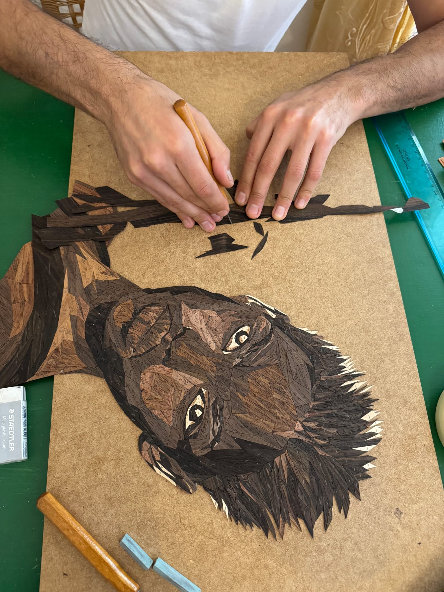
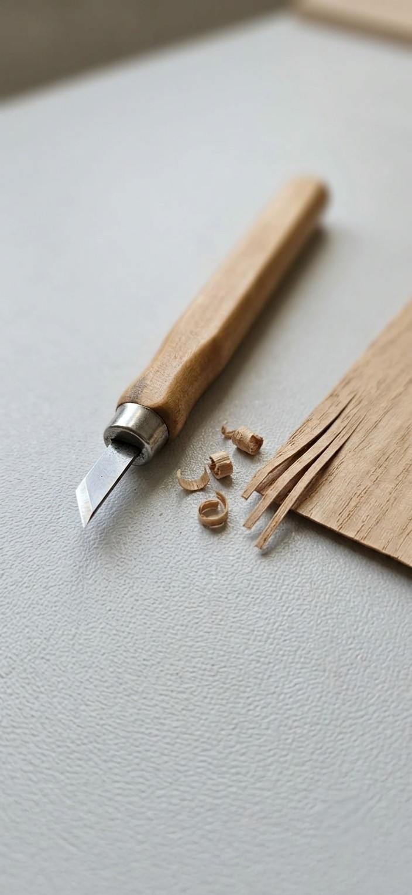

Sasun Sargsyan
Pisa · Toskana · Italien
Geboren 1991. Mit Holz seit dem neunten Lebensjahr.
Herkunft
Sasun Sargsyan wurde am 17. September 1991 in Jerewan, Armenien, geboren. Mit neun Jahren begann er, mit Holz zu arbeiten — nicht als Unterricht, nicht als Schulübung, sondern weil ihn etwas an diesem Material nicht losließ. Seine Präzision. Die Unumkehrbarkeit jedes Schnitts. Er blieb ihm die folgenden fünfundzwanzig Jahre treu.
Werdegang
Er schloss ein Studium in Armenien ab und baute anschließend ein eigenes Unternehmen auf — eines, das einige Jahre lang funktionierte und dann nicht mehr. Das Scheitern lehrte ihn, was Erfolg nicht lehrt: zu erkennen, was bleibt, wenn alles Vorläufige wegfällt. In all diesen Jahren ruhte das Handwerk nie. Es war nie von dem zu trennen, der er war.
Italien
Der Konflikt von 2020 in Arzach unterbrach das Leben, das er geplant hatte. 2021 zog er in die Toskana — mit einer Sprache, die er noch nicht sprach, und einer still getroffenen Entscheidung darüber, was zählt. Auch in Italien baute er ein Unternehmen auf. Auch dieses lehrte ihn etwas, als es schloss.
Kunst als Berufung
2022 gab es zum ersten Mal in seinem Erwachsenenleben Raum für nichts als die Arbeit. Was mit neun Jahren begonnen hatte, wurde zu seiner vollen beruflichen Identität. Er schuf seine ersten großen Porträts — nicht als neue Entdeckung, sondern als lange Vorbereitung, die endlich Raum bekam. 2023 wurden die Werke in Italien gezeigt. 2024 erreichten sie Dubai.
Kein später Anfang. Eine lange Vorbereitung.
Heute & morgen
Er arbeitet in einem kleinen Atelier in Pisa, in der Toskana. Jeder Schnitt erfolgt von Hand. Kein Laser. Keine Schablone. Kein Assistent. Jedes Werk der Kollektion benötigte vier bis sechs Wochen bis zur Vollendung.
Er arbeitet auf ein eigenes Möbelatelier hin, strebt die Teilnahme an internationalen Handwerkswettbewerben an und möchte in bedeutenden Galerien im Vereinigten Königreich und international ausstellen. Aufträge werden auf private Anfrage angenommen und beginnen mit einem Gespräch.
„Das Holz weiß bereits, was es werden will. Meine Aufgabe ist, ihm zuzuhören.“
Sasun Sargsyan
Was die Hände wissen
Jeder Schnitt ist freihändig. Jedes Furnier wird einzeln nach Maserungsrichtung, Ton und der Art, wie es das Licht hält, ausgewählt. Nichts wiederholt sich, nichts ist ungefähr.
Freihändiger Schnitt — kein Laser, keine Schablone

Jedes Teil einzeln nach Maserung und Ton ausgewählt

Im Entstehen — das Porträt wächst Teil für Teil

Die Maserungsrichtung ist kein Zufall — sie ist Komposition

Vor dem Versiegeln unter verschiedenen Lichtverhältnissen geprüft

Die Werkzeuge: Messer, Matte und Geduld
Holz als Palette
Kein Pigment. Keine Farbe. Die gesamte Tonskala — von hellen Eschenlichtern bis zu tiefen Wenge-Schatten — ist die natürliche Farbe des Holzes selbst. Was Sie sehen, ist das Material.
- Zweck
- Den authentischen, handwerklichen Umgang mit dem Material zeigen
- Empfohlen
- 16:10 · 1600×1000px
- Status
- Echte Atelierfotografie ausstehend
Auswahl der Furniere — jede Holzart trägt ihr eigenes Licht
- Zweck
- Den authentischen, handwerklichen Umgang mit dem Material zeigen
- Empfohlen
- 16:10 · 1600×1000px
- Status
- Echte Atelierfotografie ausstehend
Die Tonpalette ist vollkommen natürlich — von Esche bis Wenge


World Art Dubai, Dubai World Trade Centre · März 2024 — Alle Ausstellungen ansehen →
Von der Gemeinschaft gewürdigt
Die Arbeit von VaCa Marquetry wurde von der Gemeinde San Giuliano Terme offiziell für ihren Beitrag zum kulturellen und künstlerischen Leben Italiens gewürdigt. Die Ausstellungen finden Sie auf der Seite Ausstellungen.

Würdigung der Gemeinde
San Giuliano Terme, Italien
Die Gemeinde San Giuliano Terme bei Pisa — der Ort, an dem VaCa Marquetry arbeitet — würdigte offiziell den Beitrag des Ateliers zum kulturellen und künstlerischen Leben Italiens. Eine Anerkennung der Arbeit und des Platzes, den sie sich geschaffen hat.
Verpackung & Lieferung
Jedes Original verlässt das Atelier in einer maßgefertigten Schutzverpackung, geeignet für den internationalen White-Glove-Kurierversand. Die Präsentation ist Teil des Erlebnisses, ein Werk von VaCa Marquetry zu erwerben.
- Zweck
- Zeigen, wie ein Original für den internationalen Versand geschützt wird
- Empfohlen
- 4:3 · 1600×1200px
- Status
- Fotografie ausstehend
- Zweck
- Die Präsentation zeigen, die ein Sammler erhält
- Empfohlen
- 4:3 · 1600×1200px
- Status
- Fotografie ausstehend
Ein Porträt, das allein
für Sie entsteht
Jeder Auftrag beginnt mit einem persönlichen Gespräch und einer kostenlosen Vorschau Ihres Porträts, vorbereitet innerhalb von 24 Stunden.
Ihr Porträt beginnen